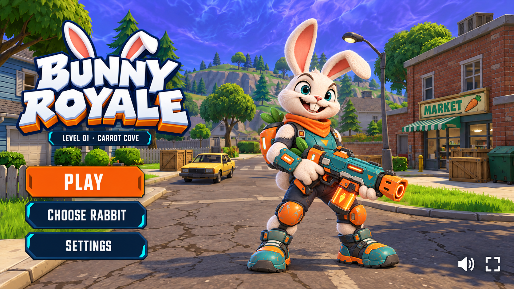
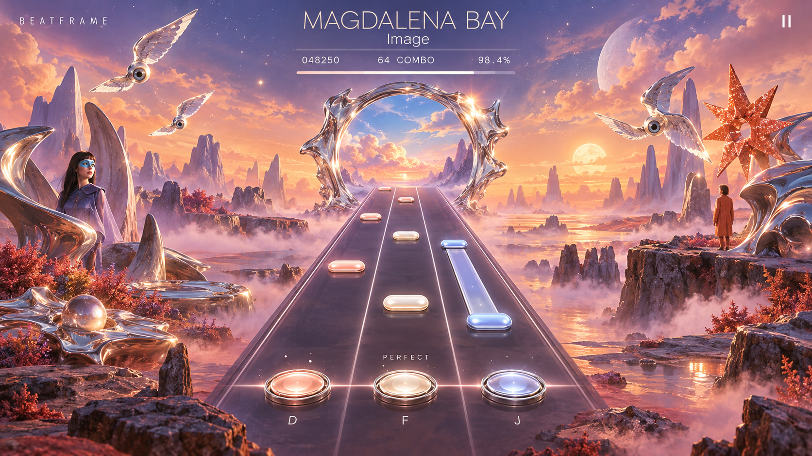
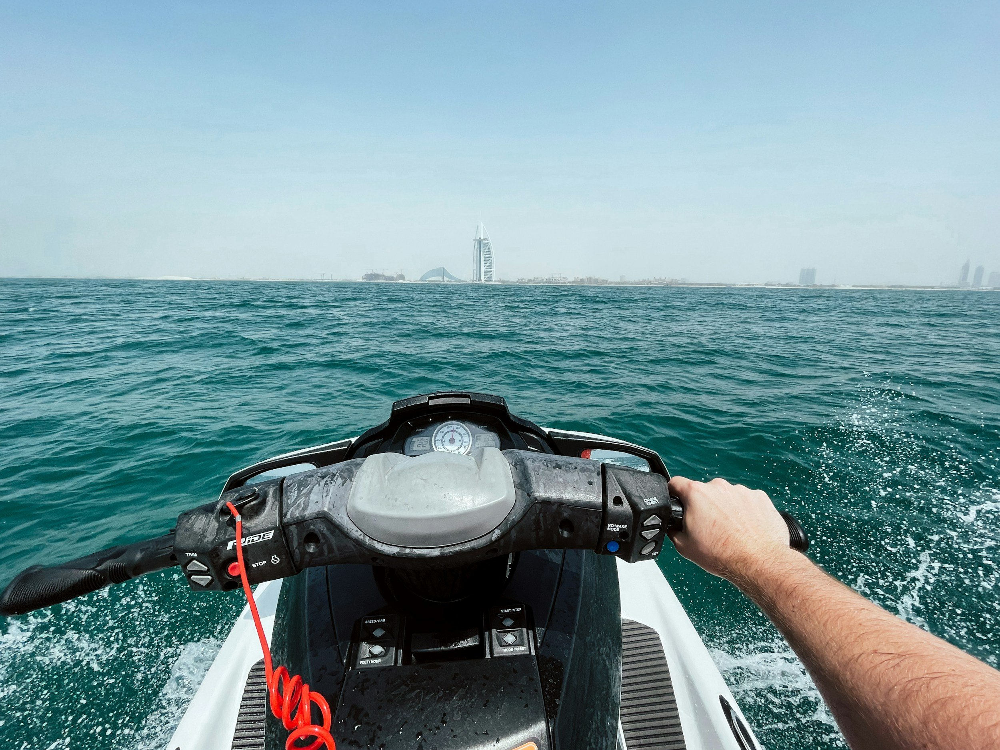
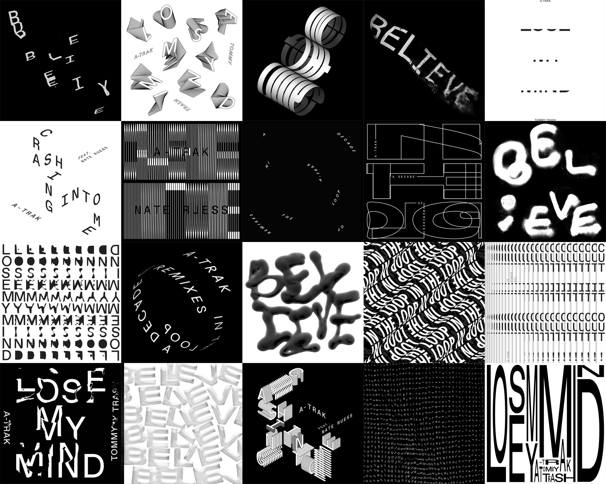
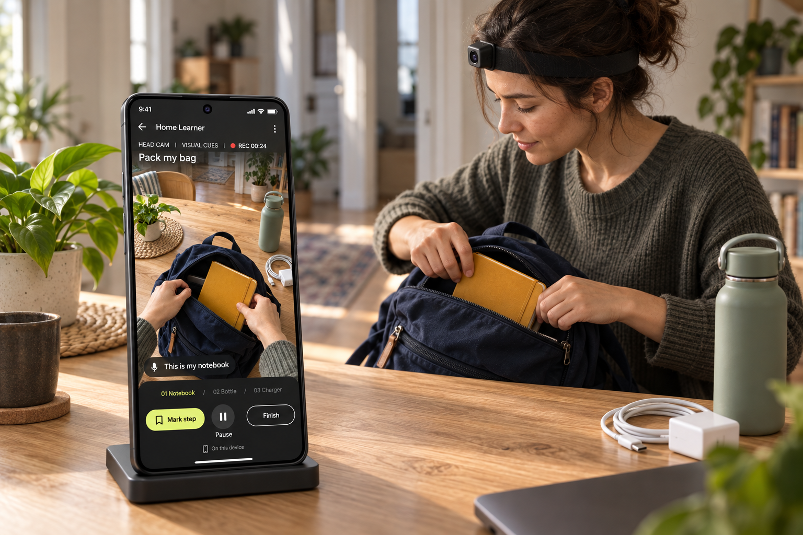

Generated concept art↗Bunny Royale
Choose Pip, Bruno or Volt and enter a bright suburban rabbit arena. Character, equipment, world and menu art make the first level concrete.
27 generated art assets · 9 documents
Version 6 · Selected interactive concepts
Current art, credited references and 54 specifications.
Concept review only. No product development.

Generated concept art↗Choose Pip, Bruno or Volt and enter a bright suburban rabbit arena. Character, equipment, world and menu art make the first level concrete.
27 generated art assets · 9 documents
 Generated concept art↗
Generated concept art↗One track, three watercolor modes: Ink Score, Kinetic Poster and Listening Diary. A shared playhead and compact controls support personal visual composition.
7 generated art assets · 9 documents

Generated concept art↗Magdalena Bay’s surreal visual world becomes Imaginal Portal: three centered rhythm lanes inside a peach, periwinkle and liquid-chrome dreamscape.
2 generated art assets · 9 documents

Published reference↗A first-person ocean ride built around readable waves, carving turns, takeoff and landing. The current image is a credited framing reference.
1 credited reference · 9 documents

Published reference↗Type a phrase and perform it with sound and direct manipulation. Expressive typography fills the canvas while a compact control strip stays at its edge.
1 credited reference · 9 documents

Generated concept art↗Demonstrate a bounded home lesson through a head camera, webcam or phone. The Android companion supports setup, deliberate capture and human review.
4 generated art assets · 9 documents
The shared principle
Fullscreen experiences with direct manipulation and compact controls at the edges. Detailed setup happens in a deliberate state. Generated art and published references are identified throughout.